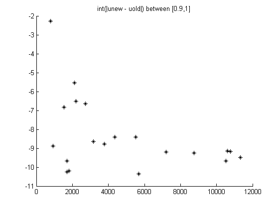

Contents
function [] = exampleConvectionDiffusion()
import pdetbplus.*; % import package for accessing the geometryObject, boundaryConditionObject and coeffsObject classes withBoundaryLayer = false; if ~withBoundaryLayer pts{1} = pointObject(0,0); pts{2} = pointObject(0,1); pts{3} = pointObject(1,1); pts{4} = pointObject(1,0); rightRegions{1} = 'in1'; rightRegions{2} = 'in2'; rightRegions{3} = 'in3'; rightRegions{4} = 'in4'; square = geometryObject.createPolygon('foo',pts,'out',rightRegions,true,false,pointObject(0.5,0.5)); else pts1{1} = pointObject(0,0); pts1{2} = pointObject(0,1); pts1{3} = pointObject(0.9,1); pts1{4} = pointObject(0.9,0); rightRegions{1} = 'in1'; leftRegions{1} = 'out'; rightRegions{2} = 'in2'; leftRegions{2} = 'out'; rightRegions{3} = 'in3'; leftRegions{3} = 'in5'; rightRegions{4} = 'in4'; leftRegions{4} = 'out'; part1 = geometryObject.createPolygon('foo',pts1,leftRegions,rightRegions,true,false,pointObject(0.45,0.5)); rightRegions{5} = 'in6'; rightRegions{6} = 'in7'; rightRegions{7} = 'in8'; rightRegions{8} = 'in5'; rr{1} = rightRegions{5}; rr{2} = rightRegions{6}; rr{3} = rightRegions{7}; rr{4} = rightRegions{8}; pts2{1} = pts1{3}; pts2{2} = pointObject(1,1); pts2{3} = pointObject(1,0); pts2{4} = pts1{4}; part2 = geometryObject.createPolygon('foo',pts2,'out',rr,true,true,pointObject(0.95,0.5)); square = part1 + part2; end square.exteriorRegion = 'out'; square = square.initMesh('numRefineMeshSteps',0); % set dimension of the problem to 1 N = 1;
Define boundary conditions using boundaryConditionObject class
instantiate boundary condition object
bc = boundaryConditionObject(square,N); %define function for Dirichlet function [hval,rval,qval,gval] = dirichlet2(x,y,u,t) % receive x,y,u at boundary edge points rval = 2*ones(N,1); hval = speye(N,N); % diagnoal 1 qval = sparse(N,N); gval = zeros(N,1); end function [hval,rval,qval,gval] = dirichlet1(x,y,u,t) % receive x,y,u at boundary edge points rval = 1*ones(N,1); hval = speye(N,N); qval = sparse(N,N); gval = zeros(N,1); end function [hval,rval,qval,gval] = neumann(x,y,u,t) % receive x,y,u at boundary edge points % do nothing; could also do rval = hval = qval = gval = []; rval = zeros(N,1); hval = sparse(N,N); qval = sparse(N,N); gval = zeros(N,1); end if ~withBoundaryLayer bc = bc.addBC('outerRegion','out','innerRegion','in1','xyutFunction',@dirichlet1); bc = bc.addBC('outerRegion','out','innerRegion','in3','xyutFunction',@dirichlet2); bc = bc.addBC('outerRegion','out','innerRegion','in2','xyutFunction',@neumann); bc = bc.addBC('outerRegion','out','innerRegion','in4','xyutFunction',@neumann); else bc = bc.addBC('outerRegion','out','innerRegion','in1','xyutFunction',@dirichlet1); bc = bc.addBC('outerRegion','out','innerRegion','in7','xyutFunction',@dirichlet2); bc = bc.addBC('outerRegion','out','innerRegion','in2','xyutFunction',@neumann); bc = bc.addBC('outerRegion','out','innerRegion','in4','xyutFunction',@neumann); bc = bc.addBC('outerRegion','out','innerRegion','in6','xyutFunction',@neumann); bc = bc.addBC('outerRegion','out','innerRegion','in8','xyutFunction',@neumann); end [Q,G,H,R] = bc.getMatrices();
Define coefficients
epsilon = 1e-3;
linearGradTerm = false;
coeffs = coeffsObject(square,N);
function cij = cCoeff(x,y,u,ux,uy,time) % receive x,y,y,ux,uy at centroids
% cij is an 2N x 2N matrix : [d/dx*c11*d/dx, d/dx*c12*d/dy; d/
% d/dy*c21*d/dx, d/dy*c22*d/dy] where the "c"'s are per the PDE
% Toolbox documentation
cij = [epsilon 0; 0 1];
end
function fi = fCoeff(x,y,u,ux,uy,time) % receive x,y,y,ux,uy at centroids
% fi is an N length vector; nth row corresponds to entry for nth
% output equation
fi = zeros(N,1);
if ~linearGradTerm
fi(1,1) = -ux;
end
end
function aij = aCoeff(x,y,u,ux,uy,time) % receive x,y,y,ux,uy at centroids
% aij is an N x N matrix; (m,n) entry in aij corresponds to the
% contribution of the nth output dimension variable to mth output
% equation
aij = zeros(N,N);
end
for k=1:length(rightRegions)
coeffs = coeffs.addCoeff('region',rightRegions{k},'fiFunction',@fCoeff,'cijFunction',@cCoeff,'aijFunction',@aCoeff);
end
function [uxcoeff,uycoeff] = f1(x,y)
uxcoeff = 1;
uycoeff = 0;
end
if linearGradTerm [K,M,F] = coeffs.getMatrices(); P = createMatrixContributionFromGradFunction(square.mesh.p,square.mesh.t,@f1); K = K - P; % modify K u = assempde(K,M,F,Q,G,H,R); else u0 = zeros(size(square.mesh.p,2),1); [u,p,e,t] = adaptmesh(@square.geometryFunction,@bc.bcFunction,@coeffs.cFunction,@coeffs.aFunction,@coeffs.fFunction,'Init',u0,'Nonlin','on','Jac','full','Ngen',30); square.mesh = meshObject('p',p,'e',e,'t',t); end figure(1); clf; square.plot('showMesh',true); uatxy = square.createXYFunctionFromNodalSolution(u); uatxy0 = @(x) uatxy(x,0); uatxyHalf = @(x) uatxy(x,0.5); uatxy19 = @(x) uatxy(x,0.19); figure(2); clf; plot((0:0.01:1),uatxy0((0:0.01:1)),'k'); hold on; plot((0:0.01:1),uatxyHalf((0:0.01:1)),'b'); plot((0:0.01:1),uatxy19((0:0.01:1)),'r');
Number of triangles: 372 Number of triangles: 408 Number of triangles: 460 Number of triangles: 545 Number of triangles: 559 Number of triangles: 587 Number of triangles: 613 Number of triangles: 631 Number of triangles: 653 Number of triangles: 655 Number of triangles: 710 Number of triangles: 756 Number of triangles: 767 Number of triangles: 773 Number of triangles: 800 Number of triangles: 821 Number of triangles: 853 Number of triangles: 881 Number of triangles: 911 Number of triangles: 929 Number of triangles: 951 Number of triangles: 968 Number of triangles: 992 Number of triangles: 1013 Number of triangles: 1083 Number of triangles: 1161 Number of triangles: 1189 Number of triangles: 1231 Number of triangles: 1265 Number of triangles: 1280 Number of triangles: 1293 Maximum number of refinement passes obtained.

end